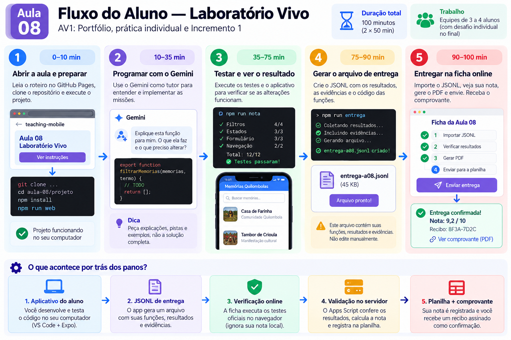

Versão candidata — avaliação por equipe. Quatro tarefas para todos e registro reflexivo de uso ou não uso de IA são propostas em qualificação. A avaliação oficial aguarda aceite do professor e homologação do servidor. Os testes locais continuam formativos.
Como funciona a entrega?
A ficha verifica as funções, gera o PDF e aguarda o recibo. O envio só é confirmado com recibo válido.
Ver o infográfico e o roteiro completo
Infográfico original, de referência histórica. Nesta candidata usamos
npm run web, o aplicativo Atividades da escola, arquivos .mjs e nota coletiva. Não siga referências a Expo, .tsx, Memórias Quilombolas ou nota individual da imagem. O exemplo 9,2/10 não corresponde aos incrementos de 0,5 da rubrica. A contextualização do original aguarda aceite docente.
O original está disponível na conversa, mas ainda precisa ser publicado nesta branch. Use o roteiro textual.
Roteiro em texto
- Abra e prepare o projeto.
- Programe as quatro tarefas em equipe e teste suas alterações; o Gemini é apoio opcional.
- Execute
npm run entrega. - Importe o JSONL nesta ficha e informe equipe e participantes.
- Após liberação docente, avalie e envie. Guarde PDF e recibo; o recebimento depende da validação do servidor.
O aplicativo gera o pacote; a ficha executa casos isolados; o servidor compara respostas, calcula a nota coletiva e registra o resultado. PDF local, sozinho, não confirma recebimento.
Resultado da equipe
Recibo da entrega
Guarde o PDF junto com o recibo. O recibo identifica os bytes do PDF pelo seu hash.